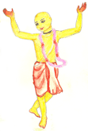
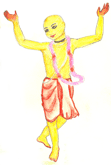

El Senior Caitanya dijo: "Saldré temprano en la mañana, sin que nadie se de cuenta y tomare el camino por el bosque." La noche anterior el había ido al templo a pedir permiso del Señor Jagannath y antes de que saliera el sol se fue sin que nadie lo viera. Sri Caitanya no fue por el camino publico, si no que entro directamente en la selva.
 
